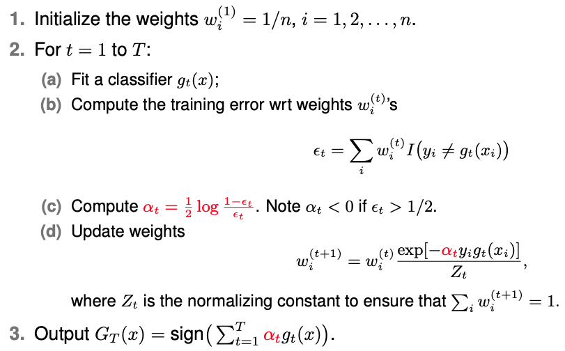

12.4. AdaBoosting
Many of you are already familiar with how decision trees work, the underlying concepts, and the criteria used to split a tree. You can grow a decision tree, let it reach a certain size, and then apply pruning techniques to obtain your final classification model.
However, we know that a single tree often doesn’t perform very well on its own. That’s where ensemble methods come into play, such as Random Forests, which build on the principles we’ve learned about regression trees. Another powerful ensemble method is boosting, and in this discussion, we’ll delve into the concept of boosting.
Boosting, specifically AdaBoost, was introduced in the context of classification. We’ll explore what AdaBoost does and what we can infer about the final classifier from this boosting algorithm. It’s worth noting that AdaBoost is essentially a gradient-based algorithm, aiming to fit the model using an exponential loss function.
12.4.1. The Algorithm
When discussing the AdaBoost algorithm, we need to switch to a notation where binary labels are represented as +1 or -1, rather than 1 and 0. The goal of AdaBoost is to combine weak classifiers, which are classifiers that don’t need to be exceptionally accurate, as long as they perform slightly better than random guessing. In fact, we can even use classifiers that perform worse than random guessing, meaning their error rate is greater than 50%, because we can simply flip their predictions to improve accuracy.
The core idea of the algorithm is to iteratively modify the weights assigned to the training data. Let’s outline the algorithm:
{kind=link}
At each iteration, marked by \(t\), we update the data weights, select a classifier (which can be chosen randomly), calculate the training error, and determine a weight \(\alpha_t.\) Then, we update the data weights based on the classifier’s performance. The algorithm continues this process for a predefined number of iterations, and at the end, we sum the weighted classifiers, each scaled by \(\alpha_t,\) to form the final classifier.
To make predictions on new data, we apply this final classifier and check the sign of the output: if it’s positive, we classify as +1, and if it’s negative, we classify as -1.
12.4.2. Proof
Next we demonstrate that the training error can be driven to zero as the number of iterations ‘T’ approaches infinity, even when the individual classifiers are weak.
To prove this, we analyze the upper bound of the training error and show that it decreases with each iteration. The training error is computed using weighted data, which results in values between 0 and 1. By upper-bounding the indicator function used to measure classification error,
We can express the training error in terms of exponential loss.
The last inequality is due to the following:
Finally, we conclude that the training error decreases as ‘T’ increases, provided that no classifier achieves an error rate exactly equal to 50%:
It’s important to note that that the training error of the combined classifier G_T generated by AdaBoost is not guaranteed to be monotonically decreasing with respect to the number of iterations. Instead, after each iteration, AdaBoost decreases a specific upper bound on the 0/1 training error. Over the long run, this continual adjustment of weights pushes the training error towards zero.
AdaBoost can utilize weak classifiers, denoted by \(g_t(x)\), even if their error rate is worse than random guessing (i.e., \(\epsilon_t > 1/2\)). In such cases, AdaBoost adapts by assigning a negative weight \(\alpha_t\), effectively using \(-g_t(x)\) to improve overall performance.
The final classifier obtained from AdaBoost may not perform well on test data, as AdaBoost aims to minimize training error, potentially leading to overfitting. Proper regularization or early stopping is often necessary to ensure good generalization to unseen data.
In summary, AdaBoost is a simple yet powerful boosting algorithm that combines weak classifiers to achieve impressive results in classification tasks. It may not always perform well on test data, so careful consideration and fine-tuning are essential when applying it to real-world problems.